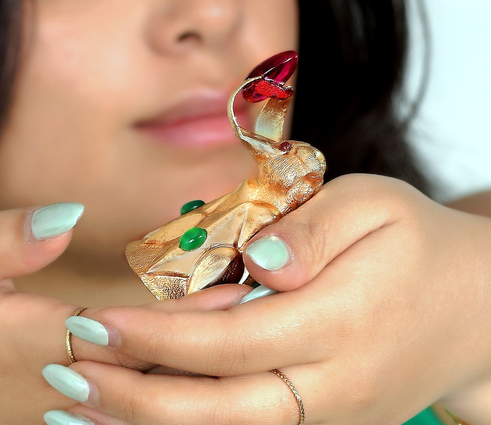
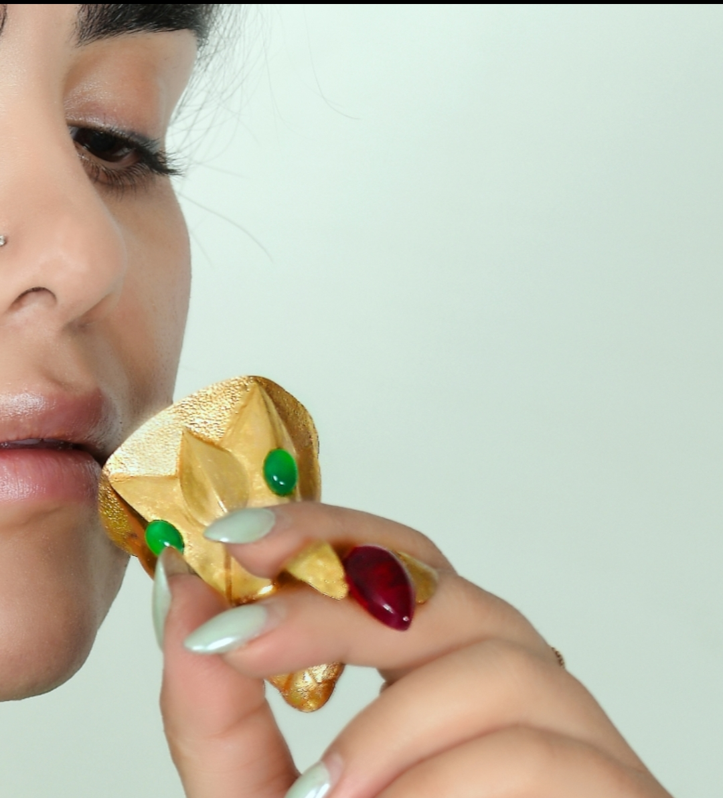

Queen’s Cup / Golden Hare
A contemporary Persian hare-form takuk/rhyton work by Hadi Hafezi, shaped in Isfahan as a small ceremonial vessel-body of alertness, delicacy and contained motion.
Contemporary artwork. Not an antiquity. Not an archaeological object. Not a historical replica.

Alertness, delicacy and contained motion
Queen’s Cup / Golden Hare is the most intimate work in the Padyar Takuk gallery. The hare is not a small decorative animal; it becomes a vessel-body caught in the moment before movement.
The name Queen’s Cup gives the work a courtly and ceremonial character. It is small enough to feel close to the hand, yet its presence is formal, precise and queenly rather than casual or decorative.
Its vessel logic remains real. Like a ceremonial cup, it may carry the idea of use; but its value is not in everyday use. Its value is in the union of cup, animal body, hand-shaped metal and symbolic presence.
When seen near the hand, the work becomes more understandable: its small scale makes the sensitivity of the metal, the curve of the body and the alertness of the hare more visible.
Hare-form vessel-body: a compact ceremonial presence held between stillness and sudden movement.
Small scale does not mean lesser value; it makes every curve, edge and proportion more exposed.
Every curve, surface and proportion must keep the hare alive while preserving the dignity of the cup.
A quiet encounter with the work
These views show the work at two distances: first as a golden ceremonial cup-body, then as a small object whose scale, surface and animal tension become clearer near the hand.
Queen’s Cup / Golden Hare — main view, showing the golden cup-body and compact animal presence.

Queen’s Cup / Golden Hare — hand-scale view, showing how close scale increases sensitivity without reducing the work to an accessory.

Queen’s Cup / Golden Hare — supplementary view, emphasizing delicacy, surface and controlled hand-shaped presence.
Small scale, high control
Small scale does not make the work easier. It makes the discipline more visible.
In a work this close to the hand, there is little space to hide error. A slight weakness in contour, pressure, surface or proportion can turn delicacy into fragility, or alertness into decoration.
The difficulty is to keep three things together at once: the lightness of the hare, the dignity of the cup and the authority of a finished artwork.
Queen’s Cup is a small ceremonial body of metal: alert like a hare, dignified like a cup, and precise enough to hold both identities at once.
جام ملکه / خرگوش زرین
جام ملکه / خرگوش زرین، ظریفترین و نزدیکترین بیان پادیار تکوک است؛ اثری کوچک، اما نه کماهمیت. در اینجا خرگوش یک حیوان تزئینی نیست؛ به بدنی جانور-ظرف تبدیل شده که انگار در لحظهای پیش از حرکت ایستاده است.
نام «جام ملکه» به اثر شأنی تشریفاتی و اشرافی میدهد. این اثر به دست نزدیک است، اما حالت روزمره ندارد؛ ظریف است، اما ضعیف نیست؛ کوچک است، اما با وقار دیده میشود.
منطق ظرف بودن در این اثر واقعی است؛ همانطور که یک شیء تشریفاتی میتواند قابلیت استفاده داشته باشد، اما ارزش اصلیاش در مصرف روزمره نیست. ارزش جام ملکه در پیوند ظرف، بدن خرگوش، فلز دستساخته و حضور نمادین آن است.
وقتی در کنار دست دیده میشود، اندازه اثر ملموستر میشود: مخاطب بهتر میفهمد که کوچک بودن این کار، دقت و کنترل بیشتری میخواهد، نه ارزش کمتر.
در این مقیاس، کوچکترین خطا در خم، لبه، سطح یا نسبتها سریع دیده میشود. هنرمند باید هم بیداری خرگوش را نگه دارد، هم شأن جام را، هم هویت یک اثر کامل تکوک را.
جام ملکه عتیقه، شیء باستانشناسی، کپی تاریخی یا بازسازی موزهای نیست. این اثر خوانشی معاصر از زبان تکوکسازی است؛ جایی که فلز، جانور، ظرف، دست و ظرافت در یک پیکره واحد جمع میشوند.
Authenticity and review context
Padyar Takuk keeps each work within a controlled documentation framework. For professional or curatorial review, selected records may include an artwork sheet, authenticity statement, not-antiquity clarification and process evidence where documented.
The essential clarification remains constant: Queen’s Cup / Golden Hare is a newly created contemporary artwork by Hadi Hafezi in Isfahan. Its vessel logic is real, but its value belongs to the level of ceremonial object, sculptural body and contemporary Persian metalwork, not everyday tableware or accessory use.